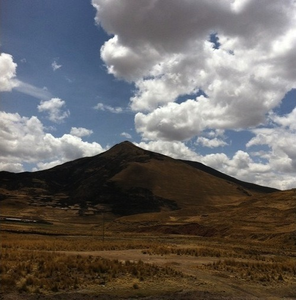

Tue, 26 Oct 2010 01:17:00 · Peru · travel · Cusco
On a slow bus along the Andean highland, Peru.

Missing my flight from Juliaca to Cusco (Peru), turned out to be a blessing. As an alternative, I had to take the slow bus that went along the winding and dizzying mountain pass along the beautiful Andean Highlands. More pix to be added later…